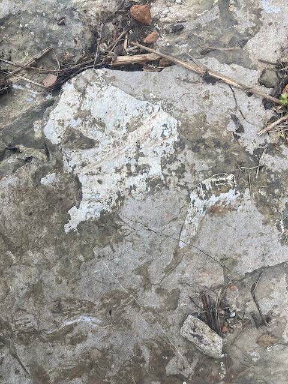
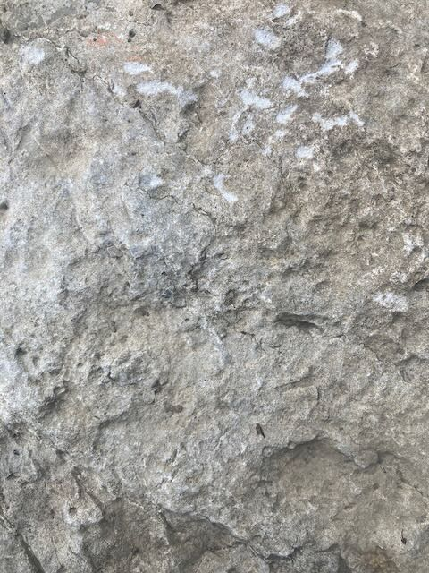
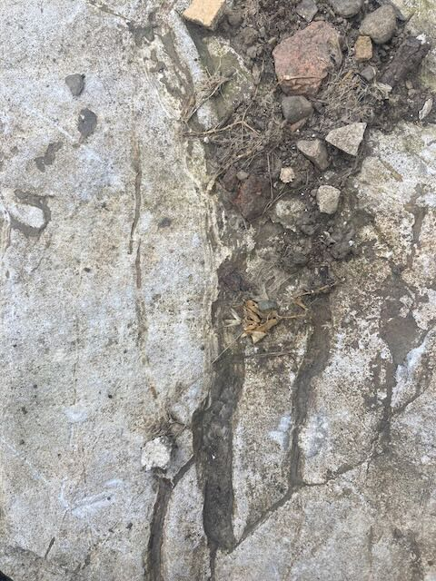
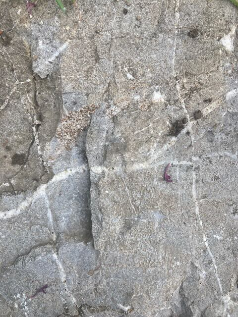
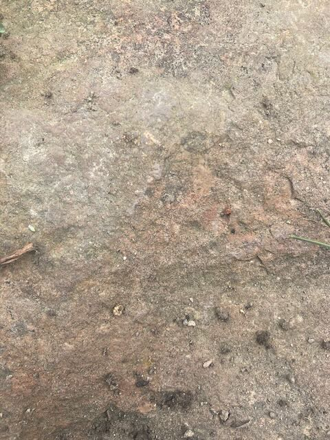
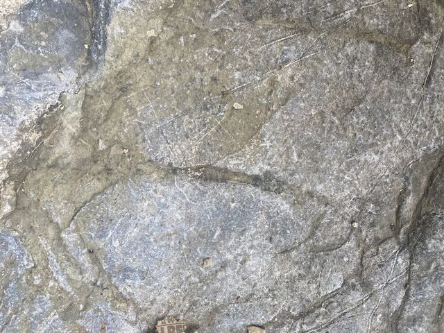
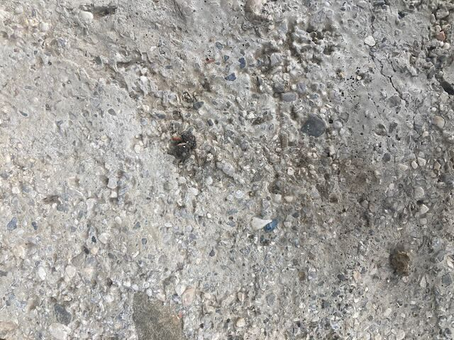
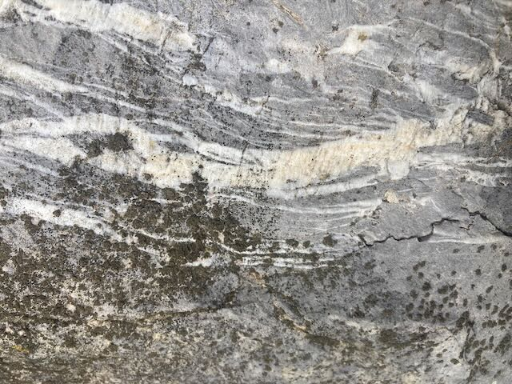
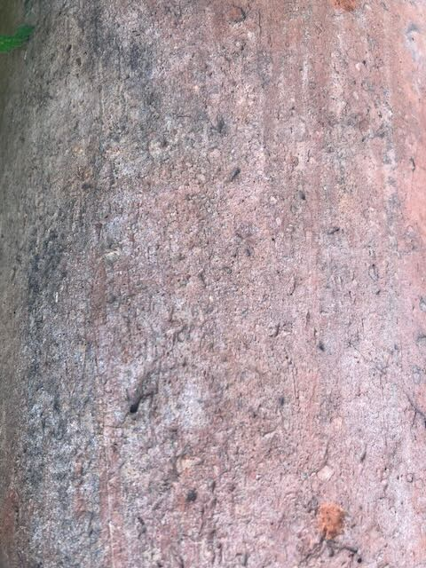

What of stones—of boulders and mountain cliffs? Clearly, a slab of granite is not alive in any obvious sense, and it is hard to see how anyone could attribute such openness or indeterminacy to it, or why they would want to.
The stone tool (its texture, color, weight), in calling attention to its projected and recollected use, produced the first hollow of reflection. Humanity and nonhumanity have always performed an intricate dance with each other. There never was a time when human agency was anything other than an interfolding network of humanity and nonhumanity.
Man is called mundus [world] because he represents in himself an image of the whole world. He has existence in common with stones, life in common with trees, sensation in common with animals, and intelligence in common with angels.
For minerals in their own way suffer death just as animals do; but the loss of their essential being is not noticed unless the change is very great. For a “dead” saphirus still retains its colour, transparency and shape just like a “live” one . . . but after a long-drawn-out change it grows dull and begins to disintegrate. . . . And the same terms, “live” and “dead,” are applicable to gold, silver, and other minerals.
If you wish to mark their graves with a lasting monument, send for the Giants’ ring [chorea gigantum], which is on Mount Killaraus in Ireland. There is there a ring of stone [structura lapidum] which no man of this era could erect save by skill and art combined. The stones are huge, beyond the strength of any man. If you set them up in the same pattern around the burial-place, they will stand forever. . . . The stones are magic [mistici sunt lapides] and can effect various cures. They were brought long ago from the farthest shores of Africa by giants, who erected them in Ireland while they lived there . . . There is not a stone among them that does not have some medicinal power.
 What if thought is not born within the human skull, but is a creativity proper to the body as a whole, arising spontaneously from the slippage between an organism and the folding terrain that it wanders? What if the curious curve of thought is engendered by the difficult eros and tension between our flesh and the flesh of the earth?
What if thought is not born within the human skull, but is a creativity proper to the body as a whole, arising spontaneously from the slippage between an organism and the folding terrain that it wanders? What if the curious curve of thought is engendered by the difficult eros and tension between our flesh and the flesh of the earth?
The imperfect and improvisational character of all earthborn beings . . . is a character also present in stone. . . . There’s an affinity between my body and the sensible presences that surround me, an old solidarity that pays scant heed to our distinction between animate and inanimate matter. . . . It unfolds in an utterly silent dimension, in that mute layer of bare existence that this material body shares with the hunkered mountains . . . with gush- ing streams and dry riverbeds and even the small stone—pink schist laced with mica—that catches my eye in one such riverbed, inducing me to clasp it between my fingers. The friendship between my hand and this stone enacts an ancient and irrefutable eros, the kindredness of matter with itself.


